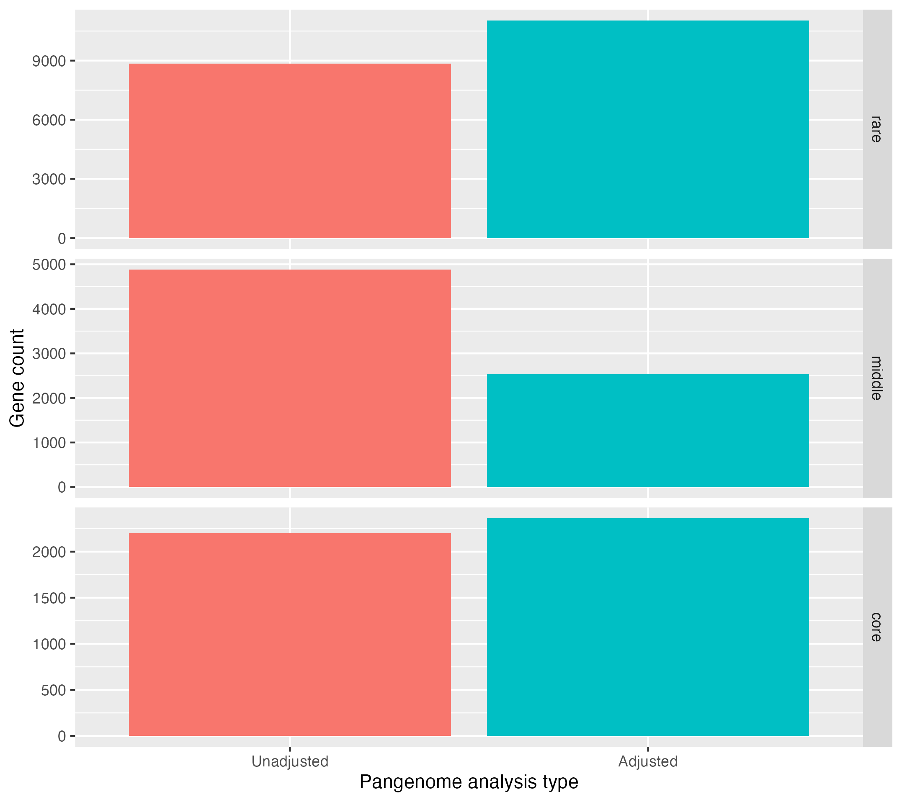

Pangenome analysis of metagenomic data
![]()
Preamble
We will first run through how to use our tool PopPUNK to build models to find subclusters within isolates data, then how to use these models (or pre-existing models) to assign MAG data to these clusters.
We anticipate the following timings:
- Building a PopPUNK model – 45 minutes.
- Assigning using a PopPUNK model – 30 minutes.
Please do not spend significantly longer than this on each one if you wish to complete the practical. You can move onto the next section at any time.
We will then show how to correct MAG data for incompleteness to give each gene a classification of core or accessory.
- Finding core and accessory genes from MAG data – 45 minutes.
Use the sidebar to see the instructions for each part.
The files for all practicals are available on the virtual machine here:
ls ~/course_dir/data_dir/MGnify_training_courseThe course prerequisities are already install on the VM. To activate the environment, run:
source ~/pangenome_mgnify_env/bin/activateIf the enviroment has been found correctly, you should see something similar to the following on your terminal
(pangenome_mgnify_env) training@user:~$1. Building PopPUNK models
We will be using 112 B. uniformis isolate genomes (i.e. not MAG data). We are going to use these to define subspecies within the population using PopPUNK. These can be listed using:
ls ~/course_dir/data_dir/MGnify_training_course/MAGs_to_build_modelInstallation instructions and an overview are available.
PopPUNK is already installed on the VM. Confirm this by running poppunk --version.
Creating the database
The first step to running PopPUNK on a new species is to create a ‘database’ which contains sketches of the genomes and calculates all of the core and accessory distances between the samples. We will be following the guidance in the relevant section of the documentation.
First, navigate to the working directory and create a new directory:
cd ~/course_dir/work_dir/Day_5 && mkdir pangenome && cd pangenomeWe need to create a list of the input files. This needs to have the sample names and the location of files with their genomes. This can be created in many ways, here we will use a simple bash command:
paste <(ls ~/course_dir/data_dir/MGnify_training_course/MAGs_to_build_model | cut -d "." -f 1 ) <(ls ~/course_dir/data_dir/MGnify_training_course/MAGs_to_build_model/MGYG*) > rfile.txtWe can now create the input database with --create-db.
Using the documentation, create sketches of the fasta files, using a minimum k of 17, and maximum k of 33. Also, plot the fits to determine whether the values of k are suitable. The command will look like:
poppunk --create-db --output b_uniformis_db --r-files rfile.txt --min-k <replace> --max-k <replace> --plot-fit 10 --threads 4To generate sketches and k vs. matching k plots:
poppunk --create-db --output b_uniformis_db --r-files rfile.txt --min-k 17 --max-k 33 --plot-fit 10 --threads 4This will run on 4 CPU cores to increase the speed. The other option is the range of k-mer lengths used, see the documentation for more information.
Have a look at the plots in the output directory e.g. b_uniformis_db/b_uniformis_db_distanceDistribution.png and some of the fit examples such as b_uniformis_db_fit_example_1.pdf.
Can you identify clusters by eye? Is the relationship between k and the proportion of matching k-mers linear?
Usually we want to run some quality control on the data.
Try this with a maximum core (pi) distance of 0.02 and a maximum accessory (a) distance of 1. Try also with different values and compare the results. The command will be:
poppunk --qc-db --ref-db b_uniformis_db --max-pi-dist <replace> --max-a-dist <replace > --output b_uniformis_db_qcTo run qc:
poppunk --qc-db --ref-db b_uniformis_db --max-pi-dist 0.02 --max-a-dist 1 --output b_uniformis_db_qcThis removes outlying distances and poor quality samples.
However if we run with a smaller core (pi) distance, this will remove half of the samples.
poppunk --qc-db --ref-db b_uniformis_db --max-pi-dist 0.01 --max-a-dist 1 --output b_uniformis_db_qc_strictThis isn’t a good idea here as this core distance is too strict for a species as diverse as B. uniformis.
This is an example of how to condict quality control. In this case the data is all good quality and should all be retained.
Fitting a model
We now need to create a ‘model’ which determines a cutoff below which genomes are considered the same subspecies.
There are many options available, as detailed in the documentation.
As we have ‘small’ sample collection with strain-structure where distance distribution components are clearly separated, we’ll try the Bayesian Gaussian Mixture Model with two components:
poppunk --fit-model bgmm --ref-db b_uniformis_db --output b_uniformis_BGMM_K2 --K 2From the output to the console we can see that everything is in one cluster (In Network Summary there is one component) and so we haven’t found any subspecies. Have a look at the output plot b_uniformis_BGMM_K2/b_uniformis_BGMM_K2_DPGMM_fit.png too.
It looks like adding an extra component (‘blob’) might help, so let’s try that and make three rather than two.
Fit the BGMM model using three components. How does it compare visually to using two components?
To run with more components:
poppunk --fit-model bgmm --ref-db b_uniformis_db --output b_uniformis_BGMM_K3 --K 3That looks better and there are some clusters (In Network Summary there are is seven/eight components), but if you look at the same plot again (b_uniformis_BGMM_K3/b_uniformis_BGMM_K3_DPGMM_fit.png) it doesn’t look like a great fit to the data.
In this case the data is actually a bit sparse to automatically get a good fit and we can do a much better job if we enrich the dataset with a few thousand MAGs and then use the ‘refine’ model mode. But for now we’ll take a shortcut and impose a cutoff that looks like it will work by using the threshold model.
Based on the first cluster closest to the origin, come up with a suitable threshold.
The aim is to define a cutoff which separates the cluster closest to the origin from all others. The command will be:
poppunk --fit-model threshold --ref-db b_uniformis_db --output b_uniformis_threshold --threshold <replace>Based on where the first cluster closest to the origin is, it seems a threshold of core distance at 0.0025 is the best:
poppunk --fit-model threshold --ref-db b_uniformis_db --output b_uniformis_threshold --threshold 0.0025That looks better and there are some clusters (In Network Summary there are is seven components), but if you look at the same plot again (b_uniformis_BGMM_K3/b_uniformis_BGMM_K3_DPGMM_fit.png) it doesn’t look like a great fit to the data.
There actually isn’t one ‘perfect’ cutoff, which is supported by population genetic simulations (see this paper). So we are acutally free to choose a cutoff that defines subspecies which ‘work’ for us, and the models in PopPUNK are mostly a more convenient way of automating this to find useful clusters in general.
As you can see, this is all a bit fiddly and requires iteration. It is usually better to use a previously fitted and tested model, which we will cover in the next part.
Visualising the results
But before we move on, let’s get a better look at the results. We can make a core genome tree and accessory genome embedding and plot the clusters interactively in the browser. First, run the poppunk_visualise command.
poppunk_visualise --ref-db b_uniformis_db --model-dir b_uniformis_threshold --microreact --maxIter 100000 --output b_uniformis_db_vizHere, maxIter is being used to reduce the number embedding iterations as the dataset is small, just so the command runs quickly.
Now, open up https://microreact.org/ in your browser and choose ‘Upload’. Drag and drop the .microreact file in the b_uniformis_db_viz directory to see the clusters and the tree. To change the tree layout, select the circular tree option in the top right corner.
The left-hand panel shows clustering by accessory genome distance, whilst the right-hand panel shows the tree generated from core genome distances. The points are coloured by which sequence cluster they were assigned to by PopPUNK.
Check whether the cluster assignments (colours of tips/points) matches up with the phylogeny. Are the cluster assignments in agreement with the core genome tree and the accessory distances?
As we only used a core genome threshold, it is likely that the cluster assignments will be in better aggreement with the core distances rather than the accessory distances. Using different models to identify sequence clusters (e.g. BGMM) will give different results.
Further analysis
If you have time, try playing around with different methods of fitting PopPUNK models in the documentation.
You can experiment with HDBSCAN, a method for automatically detecting the number and position of clusters.
How do the number of identified sequence clusters compare between using BGMM, HDBSCAN and threshold models?
Once you have a model fitted using BGMM or HDBSCAN, you can also refine it. This method takes a previously identified within-strain boundary and moves it to optimise the network score of the strain cluster network. We always recommend refining a previous fit, as it may significantly improve strain assignments.
Again, how do the number of identified sequence clusters compare when using refinement?
You can also play around with visualisation tools such as Cytoscape. Use the poppunk_visualise tool to generate a cytoscape output following the documentation. This will allow you to visualise the strain cluster network, the components of which are the strains detected by PopPUNK. Note: this will generate a file for each component, as well as the whole network, enabling visualisation of the whole network or just parts of it. To open the file, open Cytoscape -> File -> Import -> Network from File and them open a .gml file.
2. Assigning using PopPUNK models
It is faster to ‘assign’ new samples to an existing definition of subspecies. This has the bonus that their names will be consistent across studies.
Typically, you can download an existing database with a fit from https://www.bacpop.org/poppunk-databases. If you have a fit for a new species please send it to us and we can share it here.
There is no fit for B. uniformis (yet…) so we’ll use the one we just made.
Using poppunk_assign to assign MAGs to subspecies
Now we’ll work with a large collection of MAGs. These are the B. uniformis MAGs from MGnify with >95% completeness and <5% contamination. They can be listed here
ls ~/course_dir/data_dir/MGnify_training_course/MAGs_to_assignPopPUNK distances are relatively robust to missing sequence content seen in MAGs, but less able to deal with contamination.
Again, navigate to the work directory and create the list of input files for poppunk:
cd ~/course_dir/work_dir/Day_5/pangenome
paste <(ls ~/course_dir/data_dir/MGnify_training_course/MAGs_to_assign | cut -d "." -f 1 ) <(ls ~/course_dir/data_dir/MGnify_training_course/MAGs_to_assign/*.fasta) > qfile.txtOne small problem is that these MAGs also contain the isolates from before. PopPUNK will refuse to assign these without unique names. Here’s a bash incantation to remove the duplicates:
cut -f 1 rfile.txt > ref_names.txt && grep -v -w -f ref_names.txt qfile.txt > qfile_nodups.txt
mv qfile_nodups.txt qfile.txtThe command is relatively simple, we need to provide the database, the model directory and the input ‘query’ genomes to assign. Quality control is ‘built-in’:
poppunk_assign --db b_uniformis_db --model-dir b_uniformis_threshold --query qfile.txt --output b_uniformis_queries --threads 4 --max-merge 3 --run-qc --max-a-dist 0.8The b_uniformis_queries_clusters.csv file contains the subspecies assignments.
The visualisation command is a bit more involved as we need to point to both directories and the model directory:
poppunk_visualise --ref-db b_uniformis_db --query-db b_uniformis_queries --model-dir b_uniformis_threshold --microreact --output b_uniformis_query_viz --threads 4 --maxIter 10000000 --previous-query-clustering b_uniformis_queries/b_uniformis_queries_clusters.csv --previous-clustering b_uniformis_threshold/b_uniformis_threshold_clusters.csvLoad the .microreact output file in the b_uniformis_query_viz directory in Microreact again to see the output.
Use the menu under the ‘eye’ to change from reference/query colour (‘Status’) to ‘Cluster_Cluster’ to see the clusters.
Where do the new genomes sit on the tree relative to the old ones? Do they form a new clade, or sit across existing clades?
You’ll see that some MAGs formed new clusters (‘novel clusters’), whilst others were merged, as the new genomes connected to multiple clusters generated in the original database.
Updating the database
It is possible to permanently add the query genomes to the database, so future users can make use of novel cluster assignments. Simply add --update-db to the assignment command above. This is beyond the scope of this practical but is documented here and here.
Further analysis
If you have time, try generating another visualisation of the query network using Cytoscape.
How does this network compare to the original one from the previous section, when you only built using isolate genomes and not MAG data?
Also, try building a PopPUNK model as before, but only using the MAG data you used from assignment.
How do the distance distributions compare between the isolate data and MAG data? Does a threshold model work with the data, or would an automated method for model fitting work better?
3. Finding core and accessory genes
We can use a probabilistic model to correct for the fact that we know MAGs are missing some genes. If we don’t do this then we will systematically under-estimate their population frequency, and end up with nothing in the core genome.
CELEBRIMBOR: a pipeline for pangenome analysis and threshold correction
The CELEBRIMBOR prerequisities are already install on the VM. The source code files can be found in the CELEBRIMBOR directory which can be listed here:
ls ~/CELEBRIMBOR-1.1.2As well be editing the config files, make a copy in your working directory:
cp -r ~/CELEBRIMBOR-1.1.2 ~/course_dir/work_dir/Day_5/pangenome/CELEBRIMBORThe files we will be analysing can be listed here:
ls ~/course_dir/data_dir/MGnify_training_course/MAGs_for_CELEBRIMBORThis archive contains two directories. CELEBRIMBOR_MAGs contains the fasta files we will be analysing. results contains the Bakta and CheckM outputs which were generated previously from these genomes. As these are the slowest parts of the analysis, we have provided them to allow you to generate results faster.
As we’ll be updating results, copy the whole directory to your working directory:
cp -r ~/course_dir/data_dir/MGnify_training_course/MAGs_for_CELEBRIMBOR/results ~/course_dir/work_dir/Day_5/pangenome/CELEBRIMBOR_resultsCELEBRIMBOR is a snakemake pipeline which enables automated gene annotation, clustering, completeness estimation and core threshold adjustment. Snakemake allows workflows to be re-run if workflows stop prematurely.
To prevent CELEBRIMBOR from re-running Bakta and CheckM, I have edited the source code. If you do your own analysis outside of this practical, you will run the full workflow using identical commands.
Documentation for CELEBRIMBOR can be found here.
Snakemake reads a config.yaml file to assign parameters. Navigate to the CELEBRIMBOR directory, and update the config.yaml file with the appropriate parameters.
cd ~/course_dir/work_dir/Day_5/pangenome/CELEBRIMBOR
vim config.yamlTo start typing in vim, type i. To close vim, first use the esc key, and then WITH saving type, :wq, or WITHOUT saving, type :q!
#output directory
output_dir: /home/training/course_dir/work_dir/Day_5/pangenome/CELEBRIMBOR_results
# dir with genome fasta files, must have '.fasta' extension, to convert use 'rename .fa .fasta *.fa' (e.g. if extensions are .fa)
genome_fasta: /home/training/course_dir/data_dir/MGnify_training_course/MAGs_for_CELEBRIMBOR/CELEBRIMBOR_MAGs
# path to bakta DB:
bakta_db: /home/training/course_dir/data_dir/db-light
# cgt executable parameters
cgt_exe: /home/training/.cargo/bin/cgt_bacpop
cgt_breaks: 0.05,0.95
cgt_error: 0.05
# choice of clustering method, either "mmseqs2" or "panaroo"
clustering_method: "mmseqs2"
# must be one of "strict", "moderate" or "sensitive"
panaroo_stringency: "strict"Note: paths in the config.yaml file cannot contain ~ symbols.
To run CELEBRIMBOR, simply run the below command. Snakemake will read the config.yaml file and run CELEBRIMBOR on the associated files, avoiding Bakta and CheckM as these results have already been generated.
snakemake --cores 4This will run for a few minutes. You’ll see a number of tools being run, including MMseqs2 for clustering, and cgt for frequency threshold adjustment.
While you’re waiting, feel free to take a look at the CELEBRIMBOR or PopPUNK papers.
Once CELEBRIMBOR has finished running, take a look at the outputs printed to the console. What are the new adjusted core and rare thresholds?
You’ll observe the new frequency thresholds printed to the console. Here, the core threshold was reduced from 95% to 92.73%, whilst the rare threshold was increased from 5% to 10%.
Core threshold: >= 102 observations or >= 92.73% frequency
Rare threshold: <= 11 observations or <= 10.00% frequencyTake a look at the output files by running:
cd ~/course_dir/work_dir/Day_5/pangenome/CELEBRIMBOR_results && lsThe pangenome_summary.tsv describes the assignments of each gene family to a frequency compartment based on the raw frequency values (column order: gene name, gene annotation, frequency, frequency compartment).
cgt_output.txt details the adjusted frequency compartment assignments calculated by CELEBRIMBOR (column order: gene name, gene count, adjusted frequency compartment).
Using R, you can plot the different between the adjusted and unadjusted results by updating the script plot_frequency.R with the paths to pangenome_summary.tsv and cgt_output.txt.
Copy the R script to the working directory and edit:
cp ~/course_dir/data_dir/MGnify_training_course/plot_frequency.R ~/course_dir/work_dir/Day_5/pangenome/CELEBRIMBOR_results
vim plot_frequency.REdit the file below, using esc key and dd to delete whole lines if necessary
library(ggplot2)
# read in data
pangenome.summary <- read.csv("/home/training/course_dir/work_dir/Day_5/pangenome/CELEBRIMBOR_results/pangenome_summary.tsv", sep = "\t", header=FALSE)
colnames(pangenome.summary) <- c("gene_name", "gene_family", "frequency", "compartment_freq")
pangenome.summary$gene_family <- NULL
cgt.summary <- read.csv("/home/training/course_dir/work_dir/Day_5/pangenome/CELEBRIMBOR_results/cgt_output.txt", sep = "\t", header=TRUE)
colnames(cgt.summary) <- c("gene_name", "count", "compartment_adjusted")
# Merge data
total.df <- merge(pangenome.summary, cgt.summary, by = "gene_name")
# stack data
stacked.df <- data.frame(Type = "Unadjusted", Compartment = total.df$compartment_freq)
stacked.df <- rbind(stacked.df, data.frame(Type = "Adjusted", Compartment = total.df$compartment_adjusted))
stacked.df$Compartment <- factor(stacked.df$Compartment, levels = c("rare", "middle", "core"))
stacked.df$Type <- factor(stacked.df$Type, levels = c("Unadjusted", "Adjusted"))
# plot data
p <- ggplot(stacked.df, aes(x=Type, fill = Type)) + facet_grid(Compartment~., scales = "free_y") + geom_bar() + xlab("Pangenome analysis type") + ylab("Gene count") + theme(legend.position = "none")
ggsave("/home/training/course_dir/work_dir/Day_5/pangenome/CELEBRIMBOR_results/adjusted_gene_frequency.png", plot = p)Run the script from the R terminal:
Rsource("plot_frequency.R")Use Ctrl + Z to close the R terminal.
Take a look at adjusted_gene_frequency.png by opening the Files application and navigating to Home -> course_dir -> work_dir -> Day_5 -> pangenome -> CELEBRIMBOR_results.
It should look something like this:

Observe that the core genome and rare genome sizes increase after adjustment, whilst the middle or intermediate decreases.
There are other files that can be used for downstream analysis, such as presence_absence_matrix.txt which defines in which genomes gene families are found, as well as the annotated directory, which contains gene annotations generated using Bakta.
Further analysis
Try running CELEBRIMBOR with different parameters, such as cgt_breaks which defines the original rare and core thresholds to adjust, or cgt_error, which defines the false negative rate of CELEBRIMBOR. Replot these using the R script and compare to your previous results.
What does altering these parameter do to the number of core, middle and rare genes identified?
You can also try running with clustering_method set to panaroo, which uses Panaroo, a more accurate clustering method but less scalable than MMseqs2 (this will likely take a while to run). Also, when running Panaroo, try setting panaroo_stringency to moderate or senstive. Details on the effect of these parameters can be found here.
Plot the output of Panaroo against that of MMseqs in R, and see how using different clustering algorithms impacts the number of core, middle and rare genes.
Example analysis
Example analysis for all of today’s workshop is available here:
ls ~/course_dir/data_dir/MGnify_training_course/example_analysis/pangenome